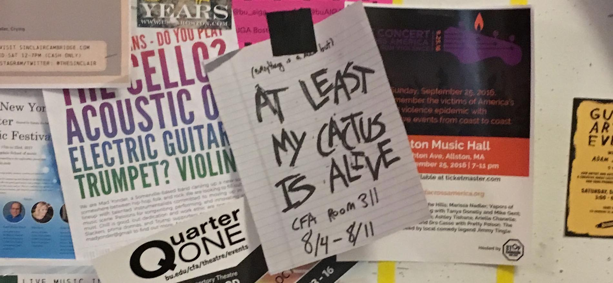
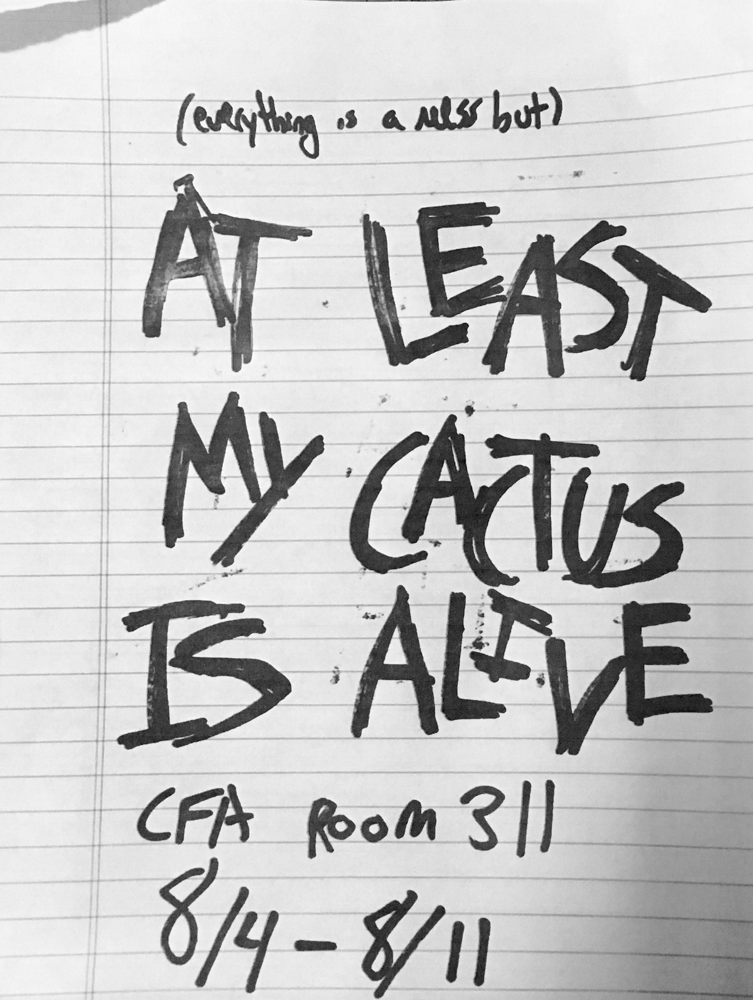
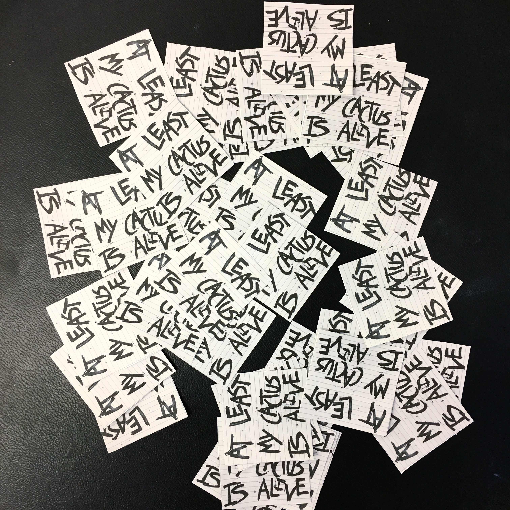
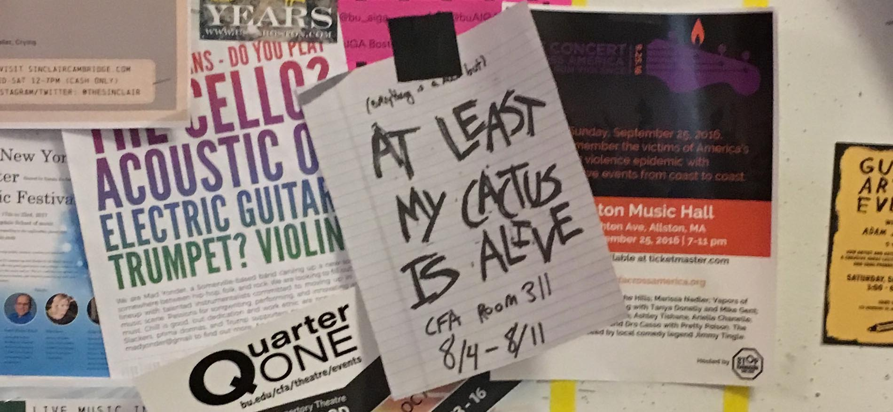
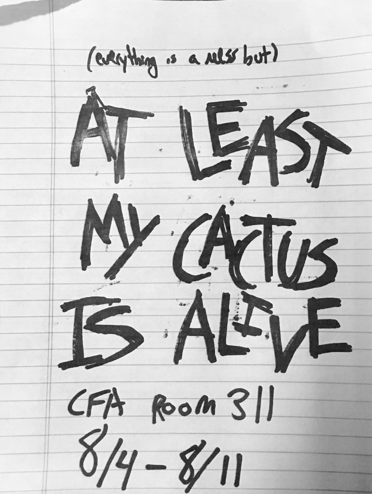
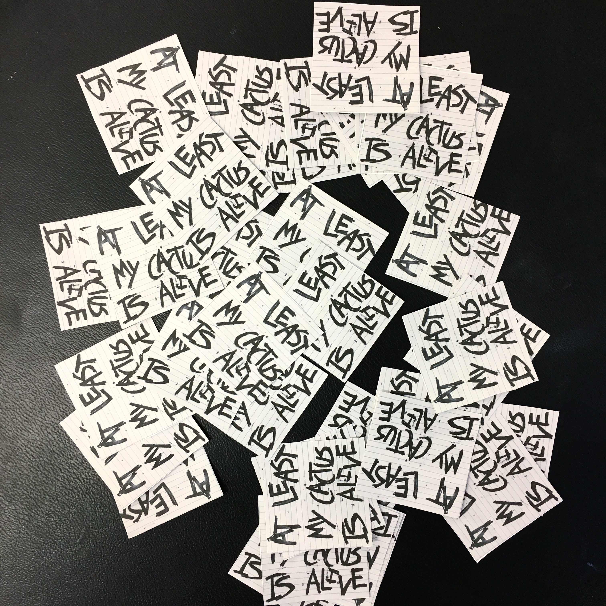

i made this project in my junior typography class prompted by 'an autobiography in 6 words'. our project also had to use nontraditional type. i knew i wanted to make an installation, and after a week or two of hounding my school's administration, i got an empty room.
i chose the phrase 'at least my cactus is alive' because at the time, i was an anxious, depressed, and heavily caffeinated 18 year old. basically the idea was everything else might be a mess, but at least i have a cactus (the cactus actually died a year later of some kind of soil mite lol). so, this project was basically about articulating my anxieties, in part to release my emotion and heal. to do this, i literally wrote out all of my anxieties with sharpies on lined paper then hung those on hemp string. as a viewer walks through the installation, they are surrounded by my web of anxiety.
ironically, when i made the flyer for the installation opening, i got the date wrong by two months lol. i wish i had a picture of the corrected flyer, it looked like i could have made the mistake on purpose.
i also made a presentational video, especially since the installation was only up a week. it is intentionally quick moving, to convey the energy of anxiety as well as obscure the written text. the video is set to cavegrrl by ursula who are really good if you like punk dirges. speaking of, this installation had an accompanying playlist which i recommend because i have good taste (most of the bands have their stuff for free on bandcamp anyway).

 




